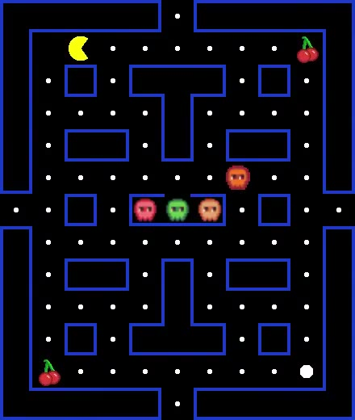

Experience
Navigate a maze, collect pellets, and avoid the moving enemies sharing its corridors. The maze makes route choice and timing part of every movement decision.

Description
The maze limits where the character can go and makes intersections important. A route that reaches more pellets may also bring the player closer to a threat or reduce the number of safe ways to turn back.
Collecting items clears part of the board, while enemy positions keep the situation changing. The core loop is to read the corridors, choose a direction, and keep making progress through the maze.
Detailed features
Maze navigation
Movement and viewpoint work together to make the space readable. The player uses the controls to choose a route, judge distance, and position the character for the next interaction.
Pellet collection
Collectible objects connect exploration with measurable progress. Finding them gives the player a reason to examine the space and confirms that a route or objective has been completed.
Moving enemy avoidance
Other actors create a changing situation for the player to read. Their positions and behavior make movement and timing relevant to the next decision.
Build summary
The project is presented with JavaScript · HTML Canvas. Its implementation connects the input or controls, the project’s changing state, and the rendered interface. The Source action opens the saved code or build material for this entry.
- Technology
- JavaScript · HTML Canvas
- Scope
- Interactive project
- Presentation
- 440 × 520 · source quality
Feature video
Project recording · 440 × 520 · Original resolution